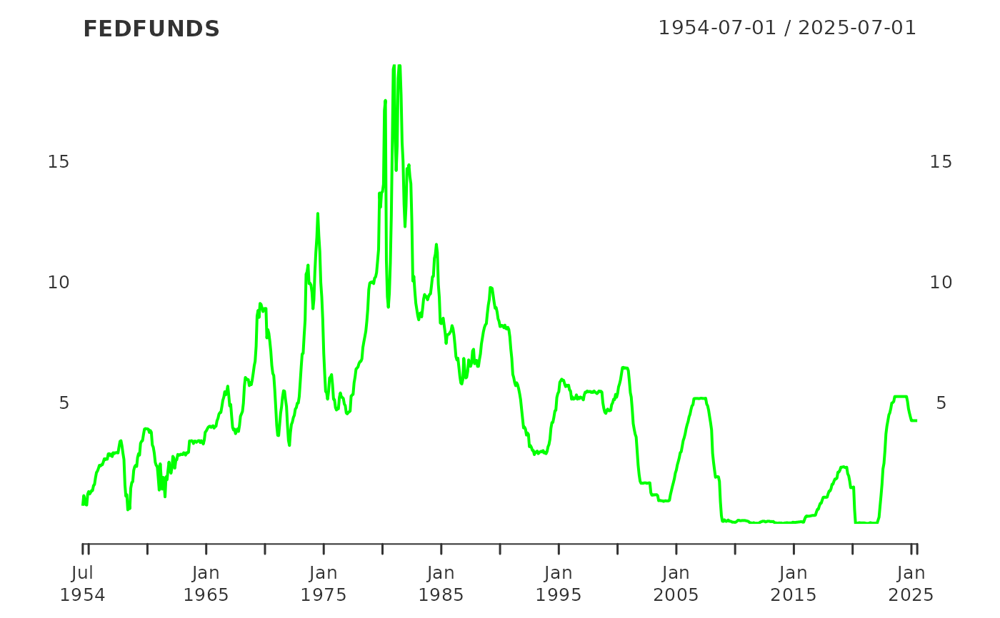

FEDFUNDS All Employees: Total Nonfarm
data(FEDFUNDS)
An xts object of the Fed Funds figures.
Release: H.15 Selected Interest Rates
Seasonal Adjustment: Not Seasonally Adjusted
Frequency: Monthly
Units: Percent
Date Range: 1954-07-01 to 2017-12-01
Last Updated 2018-01-03 8:51 AM CST
Board of Governors of the Federal Reserve System (US) https://fred.stlouisfed.org/data/FEDFUNDS.txt
Averages of daily figures.
The federal funds rate is the interest rate at which depository institutions trade federal funds (balances held at Federal Reserve Banks) with each other overnight. When a depository institution has surplus balances in its reserve account, it lends to other banks in need of larger balances. In simpler terms, a bank with excess cash, which is often referred to as liquidity, will lend to another bank that needs to quickly raise liquidity. (1) The rate that the borrowing institution pays to the lending institution is determined between the two banks; the weighted average rate for all of these types of negotiations is called the effective federal funds rate.(2) The effective federal funds rate is essentially determined by the market but is influenced by the Federal Reserve through open market operations to reach the federal funds rate target.(2) The Federal Open Market Committee (FOMC) meets eight times a year to determine the federal funds target rate. As previously stated, this rate influences the effective federal funds rate through open market operations or by buying and selling of government bonds (government debt). (2) More specifically, the Federal Reserve decreases liquidity by selling government bonds, thereby raising the federal funds rate because banks have less liquidity to trade with other banks. Similarly, the Federal Reserve can increase liquidity by buying government bonds, decreasing the federal funds rate because banks have excess liquidity for trade. Whether the Federal Reserve wants to buy or sell bonds depends on the state of the economy. If the FOMC believes the economy is growing too fast and inflation pressures are inconsistent with the dual mandate of the Federal Reserve, the Committee may set a higher federal funds rate target to temper economic activity. In the opposing scenario, the FOMC may set a lower federal funds rate target to spur greater economic activity. Therefore, the FOMC must observe the current state of the economy to determine the best course of monetary policy that will maximize economic growth while adhering to the dual mandate set forth by Congress. In making its monetary policy decisions, the FOMC considers a wealth of economic data, such as: trends in prices and wages, employment, consumer spending and income, business investments, and foreign exchange markets.
The federal funds rate is the central interest rate in the U.S. financial market. It influences other interest rates such as the prime rate, which is the rate banks charge their customers with higher credit ratings. Additionally, the federal funds rate indirectly influences longer- term interest rates such as mortgages, loans, and savings, all of which are very important to consumer wealth and confidence.(2)
References (1) Federal Reserve Bank of New York. “Federal funds.” Fedpoints, August 2007. (2) Board of Governors of the Federal Reserve System. “Monetary Policy”. http://www.federalreserve.gov/monetarypolicy/default.htm.
data(FEDFUNDS) tail(FEDFUNDS)#> [,1] #> Jul 2017 1.15 #> Aug 2017 1.16 #> Sep 2017 1.15 #> Oct 2017 1.15 #> Nov 2017 1.16 #> Dec 2017 1.30plot(FEDFUNDS, grid.col = "white", col="green")